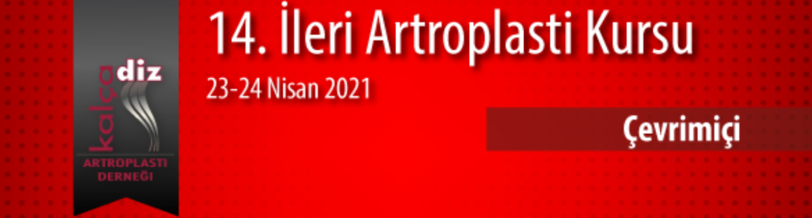

Sevgili Meslektaşlarımız,
Kalça Diz Artroplasti Derneği’nin her yıl düzenlediği “14. İleri Artroplasti Kursu” 23-24 Nisan 2021 tarihlerinde Ortopedia Hastanesi Adana’da yapılacaktır. Bir yıl kalça, bir yıl diz artroplastisi konularında yapılmakta olan İleri Artroplasti Kursu bu yıl “Diz Artroplastisi” konulu olacaktır.
İleri Artroplasti Kurslarındaki amacımız, Artroplasti konusunda çalışan ve bu konuya ilgi duyan Ortopedi ve Travmatoloji uzman hekimlerinin ve son sene asistanlarının eğitimlerine katkıda bulunmaktr.
Bu yılki “İleri Artroplasti Kursu”, Kalça Artroplastisi Cerrahisinde “Zor Primer Diz protezi”, “Primer Diz Protezi Komplikasyonları ve Çözümleri “ ile “Revizyon Diz Protezi” konularına odaklı olacak; konular video destekli teorik dersler ve olgu tartışmaları şeklinde interaktif tartışma ortamında işlenecektir. Her yıl olduğu gibi bu yıl da, canlı ameliyat uygulamaları toplantı salonundan naklen yayınlanacağız.
Kursta teorik konular, olgu tartışmaları ve canlı ameliyatlar, Artroplasti konusunda usta hocalarımızın katkıları ile gerçekleştirilecek.
Artroplastideki güncel konuların ele alınacağı kursumuz sizlerin destek ve ilgisiyle güçlenecektir.
Saygılarımızla
14. İleri Artroplasti Kursunda buluşmak üzere….
Prof. Dr. Emre Toğrul
Kurs Başkanı
Prof. Dr. Bülent Atilla
Dernek Başkanı
